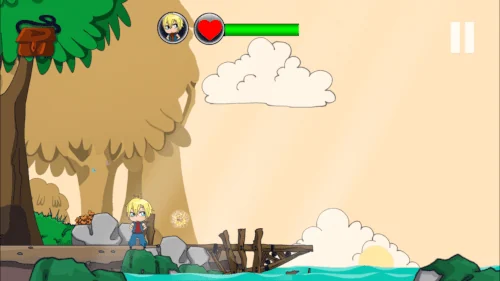

5 aventuras point-and-click
TinyStory
Heróis animais, ilhas coloridas e mistérios por resolver. Escolhe a tua história entre as cinco aventuras TinyStory.
iOS · Android · Computador, conforme o jogo
Descobrir TinyStoryAnneMu’s Games · AML Creation
Descobre TinyStory e Celestwald: duas coleções de aventuras point-and-click com mundos coloridos, personagens marcantes e enigmas curiosos.
Ver todos os jogos ↓5 aventuras point-and-click
Heróis animais, ilhas coloridas e mistérios por resolver. Escolhe a tua história entre as cinco aventuras TinyStory.
iOS · Android · Computador, conforme o jogo
Descobrir TinyStory
2 aventuras num mundo encantado
Torna-te aprendiz de alquimista, descobre a Árvore dos Sonhos e continua a viagem com as suas sementes mágicas. Explora Celestwald 1 e 2.
iOS · Android · Steam e itch.io para o primeiro jogo
Descobrir Celestwald 1 & 2✦ Já em Android
Um campo minado onde cada casa segura abre um caminho.
Lê as pistas, marca minas e guia uma pequena luz por mundos de puzzles. 60 níveis gratuitos em Android.
iPhone e iPad, em breve


Mais mundos para descobrir
Personaliza o teu Mochi ou explora os puzzles de peças de Mahjong Castle.

Jogos kawaii e criativos
Cria um companheiro virtual Mochi, veste os pequenos peluches e decora os seus quartos. Coleciona autocolantes e diverte-te com os minijogos. A atividade diária Golden Cloud permite ganhar Bunny Tokens gratuitos para o teu pequeno mundo de peluche.
iOS · Android
Descobrir Mochi Plush Kawaii
Puzzles e lógica
Combina peças livres e explora um castelo mágico em 240 níveis e 14 locais. A demonstração gratuita inclui 30 níveis do jardim e quatro do gelo. Termina o nível 30 do jardim para desbloquear tabuleiros Classic ilimitados. Disponível no Android, com Adventure Pack opcional através de uma compra única.
Android
Descobrir Mahjong CastleA coleção

Aventuras point-and-click
Seis gatinhos, seis pequenas aventuras. Explora o mundo de cada gato, recolhe objetos e resolve enigmas point-and-click divertidos. Descobre histórias diferentes e cenários coloridos em Cats in the Box Adventure para iOS e Android.
iOS · Android
Descobrir Cats in the Box Adventure
Aventuras point-and-click
Ajuda um pequeno herói cor-de-rosa a encontrar os fragmentos de um cristal partido. Explora 30 níveis nos mundos Green, Fire e Candy, recolhe objetos e resolve enigmas. Cuidado com as armadilhas pelo caminho. Fantasiant combina aventura e puzzles em dispositivos móveis e itch.io.
iOS · Android · Windows · macOS · Linux
Descobrir Fantasiant · Tiny Hero
Jogos kawaii e criativos
Veste a Lili e o seu ursinho, e decora o quarto com móveis, cores e brinquedos. Dá asas à criatividade e regressa ao teu quarto guardado. Lili’s Bedroom é um jogo de decoração para iOS que funciona offline e sem publicidade.
iOS
Descobrir Lili’s Bedroom
Já em Android
Um campo minado onde cada casa segura abre um caminho. Lê as pistas, marca minas e guia uma pequena luz por mundos de puzzles. 60 níveis gratuitos em Android.
Android · Google Play
Conhecer Lumen Mine Jogar no Google Play Ver Short do jogo
Puzzles e lógica
Reconstrói imagens coloridas com 22 puzzles tradicionais e 132 puzzles quadrados. Escolhe a dificuldade que preferires e retoma o progresso guardado. Puzzles Mix oferece duas formas de desfrutar de puzzles de imagens no iOS.
iOS
Descobrir Puzzles Mix
Puzzles e lógica
Lê as pistas numéricas, marca as minas escondidas e escolhe cada movimento com cuidado. Explora 120 níveis em dois mundos, com minas especiais e movimentos limitados que acrescentam novos desafios. Little Minesweeper Guy traz puzzles coloridos de Campo Minado ao iOS.
iOS
Descobrir Little Minesweeper Guy
Ritmo e descontração
Toca quando o círculo atingir o arco luminoso, encadeia combos e descobre fundos ilustrados. Escolhe o modo Zen, mais tranquilo, ou o modo Fast, mais rápido. Explora 10 mundos, cinco deles gratuitos, com Premium opcional através de uma compra única. Um jogo de ritmo para iPhone e iPad.
iOS
Descobrir Zen Circle SpiritMochi Plush Kawaii · 2026
Cria o teu Mochi, veste os pequenos peluches, decora os seus quartos e coleciona autocolantes. Joga todos os dias com Golden Cloud para ganhar Bunny Tokens gratuitos.
Descobrir Mochi
AML Creation · Sons e momentos tranquilos
Combina chuva, ondas, lareira e ruídos de fundo para criar o teu ambiente sonoro. Ajusta cada som, define um temporizador e ouve offline sem publicidade. Somnifox é uma aplicação de sons para iPhone e iPad, com funções gratuitas e acesso Premium opcional.
Descobrir Somnifox ↗